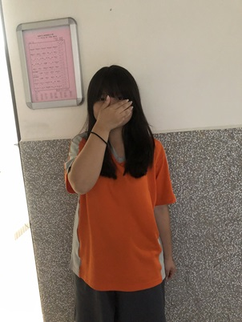
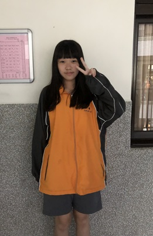
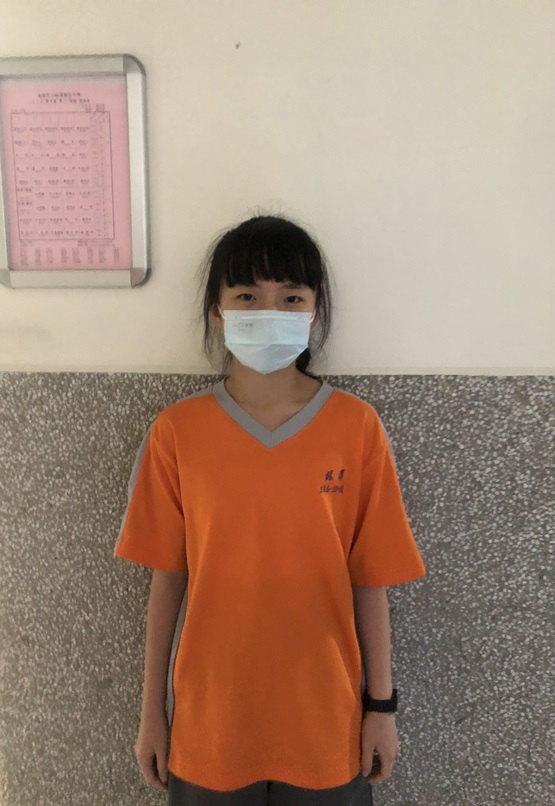
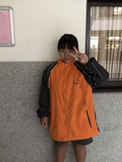

31王妍心 |
我是710班31號王妍心，我喜歡跳舞，享受跳舞。 |
32吳宇雯 |
大家好我是吳宇雯，今年13歲，平常假日喜歡打羽毛球。 |
33孟芷榕 |
大家好，我是孟芷榕，我今年十三歲。我的興趣是追星。 |

34柯沭晴 |
大家好我是柯沭晴，今年滿14歲，我的興趣是畫畫和跳舞，專長是攝影和演說。 |
35洪若童 |
我是洪若童，喜歡跳舞和打桌球，畢業於仁愛國小。 |
36胡棠寧 |
我是胡棠寧，就讀銘傳國中710班，國小讀仁愛國小。 |
37孫苡媃 |
我是孫苡媃我就讀銘傳國中七年十班，國小讀深美國小。 |
38郭羿妗 |
大家好我是銘傳國中七一零班的郭羿妗，我喜歡跳舞。 |

39陳亭妤 |
我是陳亭妤，我今年十三歲，就讀基隆銘傳國中七一零班。 |
40陳得禕 |
大家好，我是得禕，興趣是聽音樂+看小說。 |

41詹子妍 |
我是詹子妍，今年13歲，信義國小畢業，最喜歡的運動是跑步。 |
42鄭亦晴 |
j大家好我是鄭亦晴，我是銘傳國中710班的42號。 |

43劉育瑄 |
我是劉育瑄，現在是國中生，而我讀銘傳，銘傳很棒。 |